A short description of the post.
#factor analysis presentation #Factors are regarded as latent variables that cannot be observed directly, but are imperfectly #assessed through their relationship to other variables. #find the degree to which latent, composite factors account for the observed variance #of those manifest variables #interpretable in terms of the manifest variables #data reduction # noise culling # question item reduction
#Load the R libraries
[1] 19.73333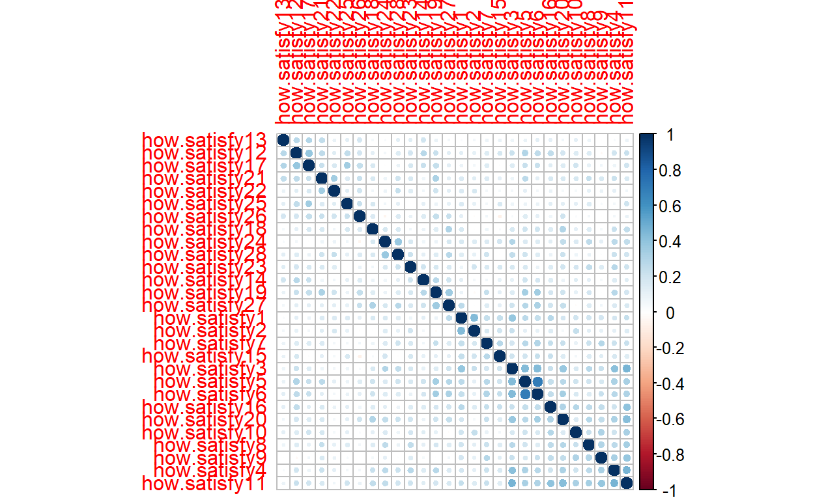
[1] 14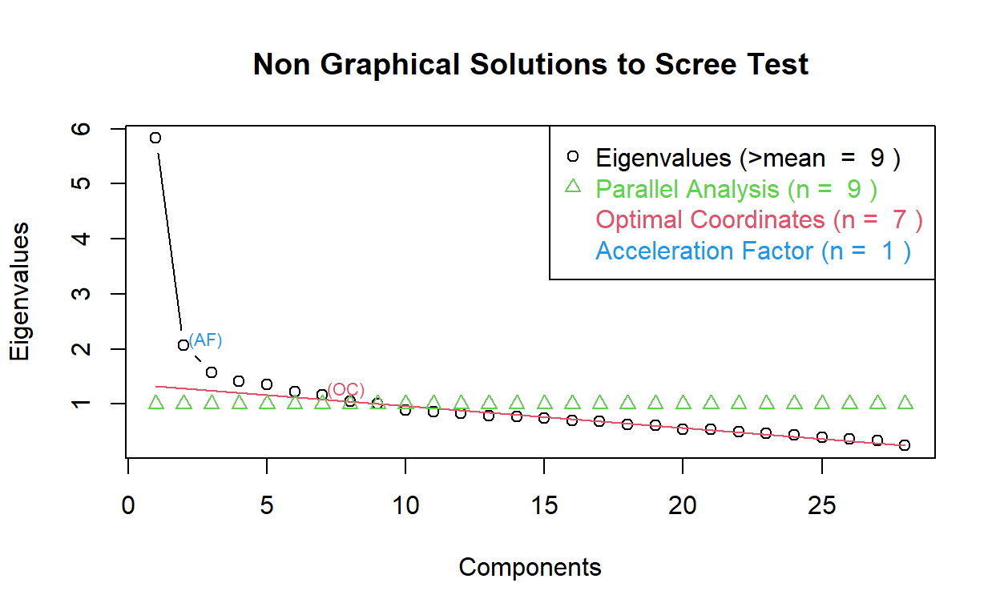
noc naf nparallel nkaiser
1 7 1 9 9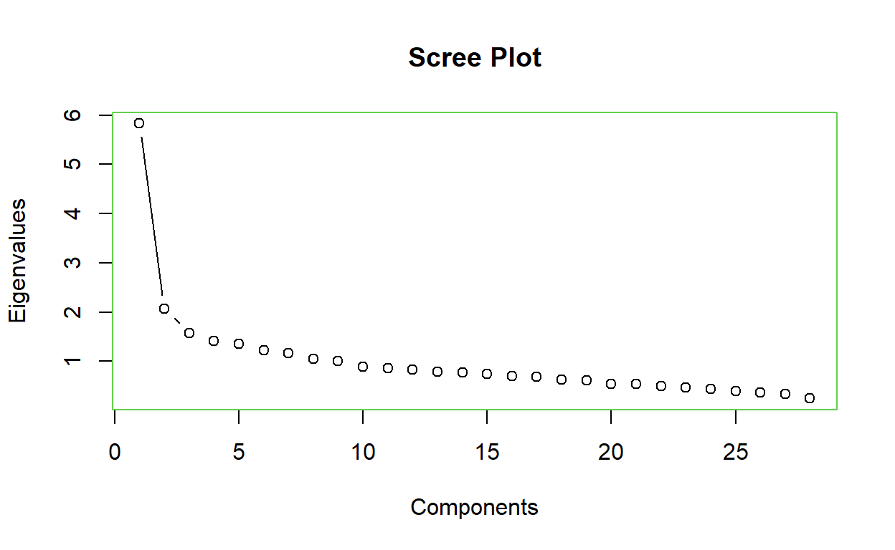
[1] 9[1] 5.829213 2.069382 1.578045 1.415408 1.354725 1.226865 1.168295
[8] 1.044250 1.006451
Call:
factanal(x = toanalyze, factors = 7)
Uniquenesses:
how.satisfy1 how.satisfy2 how.satisfy3 how.satisfy4 how.satisfy5
0.070 0.651 0.496 0.612 0.380
how.satisfy6 how.satisfy7 how.satisfy8 how.satisfy9 how.satisfy10
0.178 0.785 0.725 0.534 0.741
how.satisfy11 how.satisfy12 how.satisfy13 how.satisfy14 how.satisfy15
0.391 0.580 0.795 0.851 0.844
how.satisfy16 how.satisfy17 how.satisfy18 how.satisfy19 how.satisfy20
0.729 0.576 0.768 0.635 0.614
how.satisfy21 how.satisfy22 how.satisfy23 how.satisfy24 how.satisfy25
0.587 0.746 0.775 0.619 0.774
how.satisfy26 how.satisfy27 how.satisfy28
0.704 0.601 0.616
Loadings:
Factor1 Factor2 Factor3 Factor4 Factor5 Factor6 Factor7
how.satisfy1 0.185 0.892 0.296
how.satisfy2 0.145 0.497 -0.178 0.150 0.121
how.satisfy3 0.377 0.339 0.111 0.271 0.146 0.335 -0.171
how.satisfy4 0.487 0.174 0.126 0.304 0.101
how.satisfy5 0.214 0.691 0.188 0.103 0.168 0.111 0.103
how.satisfy6 0.205 0.847 0.154 0.182
how.satisfy7 0.276 0.254 0.151 0.193
how.satisfy8 0.448 0.171 0.154
how.satisfy9 0.635 0.123 -0.124 0.141
how.satisfy10 0.423 0.199 0.143
how.satisfy11 0.687 0.106 0.197 0.188 0.197 -0.104
how.satisfy12 0.167 0.599 0.122
how.satisfy13 0.420 0.148
how.satisfy14 0.127 0.312 0.121
how.satisfy15 0.177 0.208 0.226 0.123
how.satisfy16 0.421 0.112 0.188 0.161 0.133
how.satisfy17 0.113 0.105 0.614 0.103 0.102
how.satisfy18 0.165 0.126 0.404 0.141
how.satisfy19 0.295 0.208 0.313 0.336
how.satisfy20 0.431 0.168 0.119 0.335 0.211
how.satisfy21 0.198 0.260 0.536
how.satisfy22 0.149 0.115 0.111 0.445
how.satisfy23 0.231 0.175 0.288 0.234
how.satisfy24 0.201 0.112 0.561
how.satisfy25 0.115 0.422 0.155
how.satisfy26 0.310 0.384 0.217
how.satisfy27 0.229 0.531 0.179 0.154
how.satisfy28 0.108 0.221 0.528 0.191
Factor1 Factor2 Factor3 Factor4 Factor5 Factor6
SS loadings 2.458 1.753 1.722 1.327 1.222 1.166
Proportion Var 0.088 0.063 0.062 0.047 0.044 0.042
Cumulative Var 0.088 0.150 0.212 0.259 0.303 0.345
Factor7
SS loadings 0.979
Proportion Var 0.035
Cumulative Var 0.380
Test of the hypothesis that 7 factors are sufficient.
The chi square statistic is 256.72 on 203 degrees of freedom.
The p-value is 0.00631
Call:
factanal(x = toanalyze, factors = 9)
Uniquenesses:
how.satisfy1 how.satisfy2 how.satisfy3 how.satisfy4 how.satisfy5
0.005 0.677 0.486 0.566 0.435
how.satisfy6 how.satisfy7 how.satisfy8 how.satisfy9 how.satisfy10
0.005 0.765 0.730 0.457 0.725
how.satisfy11 how.satisfy12 how.satisfy13 how.satisfy14 how.satisfy15
0.398 0.563 0.794 0.814 0.005
how.satisfy16 how.satisfy17 how.satisfy18 how.satisfy19 how.satisfy20
0.725 0.560 0.762 0.467 0.605
how.satisfy21 how.satisfy22 how.satisfy23 how.satisfy24 how.satisfy25
0.615 0.737 0.758 0.647 0.668
how.satisfy26 how.satisfy27 how.satisfy28
0.713 0.591 0.438
Loadings:
Factor1 Factor2 Factor3 Factor4 Factor5 Factor6 Factor7
how.satisfy1 0.191 0.931 0.267
how.satisfy2 0.152 0.102 0.456 -0.181 0.140
how.satisfy3 0.417 0.302 0.272 0.314
how.satisfy4 0.524 0.137 0.235
how.satisfy5 0.244 0.616 0.168 0.111 0.134 0.116
how.satisfy6 0.202 0.942 0.148 0.175
how.satisfy7 0.272 0.208 0.118 0.196
how.satisfy8 0.462
how.satisfy9 0.646 0.127 -0.114
how.satisfy10 0.431 0.195 0.139 -0.115
how.satisfy11 0.696 0.177 0.169 0.172
how.satisfy12 0.113 0.131 0.569
how.satisfy13 0.415
how.satisfy14 0.101 0.260 0.100
how.satisfy15 0.139 0.107 0.137 0.964
how.satisfy16 0.414 0.168 0.146 0.152 0.127
how.satisfy17 0.127 0.102 0.612 0.107
how.satisfy18 0.179 0.130 0.401 0.145
how.satisfy19 0.113 0.250 0.125 0.320
how.satisfy20 0.441 0.159 0.110 0.343 0.198
how.satisfy21 0.200 0.259
how.satisfy22 0.158 0.104 0.131
how.satisfy23 0.256 0.134 0.219
how.satisfy24 0.230 0.515 0.119
how.satisfy25 0.100 0.476 0.223 0.117
how.satisfy26 0.306 0.360 -0.105
how.satisfy27 0.199 0.525 0.161
how.satisfy28 0.111 0.191 0.665
Factor8 Factor9
how.satisfy1
how.satisfy2 0.131
how.satisfy3 -0.185 0.154
how.satisfy4 0.270
how.satisfy5 0.214
how.satisfy6
how.satisfy7 0.215
how.satisfy8 0.126
how.satisfy9 0.214 -0.197
how.satisfy10 0.105
how.satisfy11 -0.103
how.satisfy12 0.258
how.satisfy13 0.148
how.satisfy14 0.287
how.satisfy15
how.satisfy16
how.satisfy17 0.122
how.satisfy18
how.satisfy19 0.301 0.488
how.satisfy20
how.satisfy21 0.494 0.138
how.satisfy22 0.450
how.satisfy23 0.191 0.248
how.satisfy24
how.satisfy25 -0.152
how.satisfy26 0.222
how.satisfy27 0.139 0.188
how.satisfy28 0.237
Factor1 Factor2 Factor3 Factor4 Factor5 Factor6
SS loadings 2.624 1.670 1.620 1.296 1.169 1.123
Proportion Var 0.094 0.060 0.058 0.046 0.042 0.040
Cumulative Var 0.094 0.153 0.211 0.257 0.299 0.339
Factor7 Factor8 Factor9
SS loadings 1.100 0.941 0.746
Proportion Var 0.039 0.034 0.027
Cumulative Var 0.379 0.412 0.439
Test of the hypothesis that 9 factors are sufficient.
The chi square statistic is 172.46 on 162 degrees of freedom.
The p-value is 0.272
Call:
factanal(x = toanalyze, factors = 7, rotation = "oblimin")
Uniquenesses:
how.satisfy1 how.satisfy2 how.satisfy3 how.satisfy4 how.satisfy5
0.070 0.651 0.496 0.612 0.380
how.satisfy6 how.satisfy7 how.satisfy8 how.satisfy9 how.satisfy10
0.178 0.785 0.725 0.534 0.741
how.satisfy11 how.satisfy12 how.satisfy13 how.satisfy14 how.satisfy15
0.391 0.580 0.795 0.851 0.844
how.satisfy16 how.satisfy17 how.satisfy18 how.satisfy19 how.satisfy20
0.729 0.576 0.768 0.635 0.614
how.satisfy21 how.satisfy22 how.satisfy23 how.satisfy24 how.satisfy25
0.587 0.746 0.775 0.619 0.774
how.satisfy26 how.satisfy27 how.satisfy28
0.704 0.601 0.616
Loadings:
Factor1 Factor2 Factor3 Factor4 Factor5 Factor6 Factor7
how.satisfy1 0.972
how.satisfy2 0.401 0.150 -0.351
how.satisfy3 0.237 0.287 0.198 0.284 -0.220
how.satisfy4 0.426 0.104 0.269
how.satisfy5 0.730
how.satisfy6 0.925
how.satisfy7 0.164 0.232 0.188
how.satisfy8 0.414 0.137 0.146
how.satisfy9 0.634 -0.195 -0.145 0.183 -0.103
how.satisfy10 0.369 0.182 -0.193
how.satisfy11 0.685 0.161 0.108 -0.126
how.satisfy12 0.128 0.590
how.satisfy13 0.415 0.121
how.satisfy14 0.101 0.281
how.satisfy15 0.193 0.145 0.102 -0.195
how.satisfy16 0.378 0.149 0.156
how.satisfy17 0.606 -0.113
how.satisfy18 0.164 0.116 0.346
how.satisfy19 0.286 0.317 0.255
how.satisfy20 0.419 0.156 0.245
how.satisfy21 0.109 0.161 0.530
how.satisfy22 0.135 0.431
how.satisfy23 0.149 0.128 0.291 0.213 -0.109
how.satisfy24 0.104 0.590
how.satisfy25 -0.110 0.436 0.114
how.satisfy26 0.258 0.189 0.367
how.satisfy27 0.193 0.168 0.176 0.108 0.442
how.satisfy28 0.570 0.130 0.119
Factor1 Factor2 Factor3 Factor4 Factor5 Factor6
SS loadings 1.863 1.762 1.437 1.290 1.133 0.895
Proportion Var 0.067 0.063 0.051 0.046 0.040 0.032
Cumulative Var 0.067 0.129 0.181 0.227 0.267 0.299
Factor7
SS loadings 0.852
Proportion Var 0.030
Cumulative Var 0.330
Factor Correlations:
Factor1 Factor2 Factor3 Factor4 Factor5 Factor6 Factor7
Factor1 1.000000 -0.297 -0.286211 -0.161 0.268 0.1284 0.000727
Factor2 -0.296686 1.000 0.390676 0.298 -0.300 -0.1291 -0.190577
Factor3 -0.286211 0.391 1.000000 0.198 -0.326 -0.1244 0.000527
Factor4 -0.161110 0.298 0.198490 1.000 -0.203 -0.2547 -0.183670
Factor5 0.267900 -0.300 -0.326084 -0.203 1.000 0.1154 0.144337
Factor6 0.128371 -0.129 -0.124435 -0.255 0.115 1.0000 0.081702
Factor7 0.000727 -0.191 0.000527 -0.184 0.144 0.0817 1.000000
Test of the hypothesis that 7 factors are sufficient.
The chi square statistic is 256.72 on 203 degrees of freedom.
The p-value is 0.00631 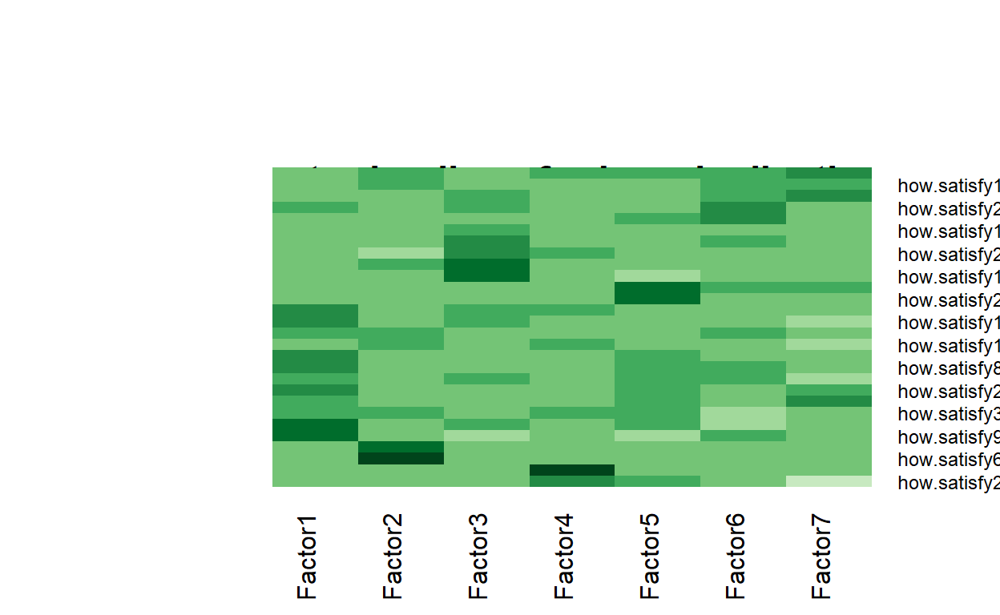
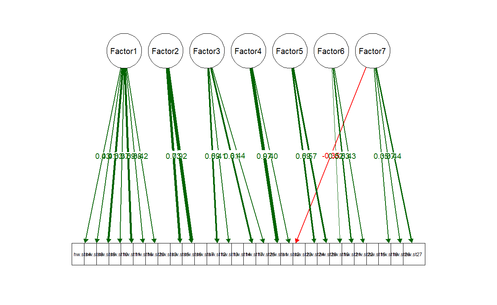
noc naf nparallel nkaiser
1 7 1 8 8[1] 8[1] 5.507229 2.001911 1.563540 1.413305 1.348346 1.218555 1.153095
[8] 1.014301
Call:
factanal(x = toanalyze, factors = 7)
Uniquenesses:
how.satisfy1 how.satisfy2 how.satisfy4 how.satisfy5 how.satisfy6
0.331 0.581 0.614 0.396 0.139
how.satisfy7 how.satisfy8 how.satisfy9 how.satisfy10 how.satisfy11
0.790 0.725 0.581 0.729 0.427
how.satisfy12 how.satisfy13 how.satisfy14 how.satisfy15 how.satisfy16
0.607 0.788 0.851 0.838 0.711
how.satisfy17 how.satisfy18 how.satisfy19 how.satisfy20 how.satisfy21
0.561 0.761 0.627 0.618 0.574
how.satisfy22 how.satisfy23 how.satisfy24 how.satisfy25 how.satisfy26
0.737 0.785 0.524 0.750 0.705
how.satisfy27 how.satisfy28
0.575 0.623
Loadings:
Factor1 Factor2 Factor3 Factor4 Factor5 Factor6 Factor7
how.satisfy1 0.187 0.730 0.295
how.satisfy2 0.127 0.592 -0.138 0.112 0.114
how.satisfy4 0.510 0.169 0.113 0.166 0.237
how.satisfy5 0.230 0.177 0.674 0.115 0.163 0.140
how.satisfy6 0.208 0.164 0.864 0.102 0.177
how.satisfy7 0.281 0.240 0.186 0.141 0.112
how.satisfy8 0.454 0.152 0.149
how.satisfy9 0.607 -0.105 0.120 0.104
how.satisfy10 0.424 0.207 0.179 -0.104
how.satisfy11 0.686 0.187 0.101 0.186 0.132
how.satisfy12 0.109 0.574 0.156 0.113
how.satisfy13 0.425 0.150
how.satisfy14 0.310 0.119 0.128
how.satisfy15 0.178 0.183 0.273 0.122
how.satisfy16 0.430 0.183 0.191 0.156
how.satisfy17 0.105 0.627 0.101 0.115
how.satisfy18 0.180 0.132 0.405 0.141
how.satisfy19 0.119 0.192 0.302 0.288 0.365
how.satisfy20 0.446 0.122 0.165 0.331 0.175
how.satisfy21 0.204 0.239 0.561
how.satisfy22 0.132 0.142 0.459
how.satisfy23 0.248 0.167 0.240 0.252
how.satisfy24 0.220 0.135 0.630
how.satisfy25 0.104 0.438 0.122 0.173
how.satisfy26 0.301 0.365 0.250
how.satisfy27 0.223 0.559 0.151 0.174
how.satisfy28 0.113 0.219 0.207 0.512
Factor1 Factor2 Factor3 Factor4 Factor5 Factor6
SS loadings 2.370 1.675 1.607 1.193 1.186 1.026
Proportion Var 0.088 0.062 0.060 0.044 0.044 0.038
Cumulative Var 0.088 0.150 0.209 0.254 0.297 0.335
Factor7
SS loadings 0.995
Proportion Var 0.037
Cumulative Var 0.372
Test of the hypothesis that 7 factors are sufficient.
The chi square statistic is 228.63 on 183 degrees of freedom.
The p-value is 0.0124
Call:
factanal(x = toanalyze, factors = 8)
Uniquenesses:
how.satisfy1 how.satisfy2 how.satisfy4 how.satisfy5 how.satisfy6
0.400 0.558 0.600 0.449 0.005
how.satisfy7 how.satisfy8 how.satisfy9 how.satisfy10 how.satisfy11
0.788 0.721 0.655 0.735 0.408
how.satisfy12 how.satisfy13 how.satisfy14 how.satisfy15 how.satisfy16
0.626 0.791 0.748 0.802 0.719
how.satisfy17 how.satisfy18 how.satisfy19 how.satisfy20 how.satisfy21
0.529 0.753 0.572 0.628 0.005
how.satisfy22 how.satisfy23 how.satisfy24 how.satisfy25 how.satisfy26
0.818 0.694 0.742 0.716 0.747
how.satisfy27 how.satisfy28
0.509 0.005
Loadings:
Factor1 Factor2 Factor3 Factor4 Factor5 Factor6 Factor7
how.satisfy1 0.203 0.688 0.268
how.satisfy2 0.130 0.620 -0.142
how.satisfy4 0.540 0.133 0.130 0.100
how.satisfy5 0.258 0.159 0.613 0.120 0.174 0.117
how.satisfy6 0.225 0.149 0.939 0.101 0.161
how.satisfy7 0.273 0.205 0.204 0.137
how.satisfy8 0.463 0.113 0.113
how.satisfy9 0.553 0.118 0.113
how.satisfy10 0.409 0.210 0.180 -0.125
how.satisfy11 0.720 0.184 0.101 0.129
how.satisfy12 0.127 0.518 0.140
how.satisfy13 0.402 0.150
how.satisfy14 0.284 0.134
how.satisfy15 0.191 0.164 0.299
how.satisfy16 0.427 0.160 0.197 0.141
how.satisfy17 0.659
how.satisfy18 0.238 0.130 0.395
how.satisfy19 0.116 0.164 0.255 0.342 0.208
how.satisfy20 0.489 0.109 0.165 0.113 0.284
how.satisfy21 0.200 0.229 0.941
how.satisfy22 0.167 0.162 0.152 0.103 0.291
how.satisfy23 0.252 0.119 0.149
how.satisfy24 0.301 0.131 0.350
how.satisfy25 0.120 0.467 0.116 0.158
how.satisfy26 0.344 0.341 0.126
how.satisfy27 0.187 0.145 0.610
how.satisfy28 0.129 0.962 0.157 0.124
Factor8
how.satisfy1
how.satisfy2
how.satisfy4 0.235
how.satisfy5 0.141
how.satisfy6
how.satisfy7 0.160
how.satisfy8 0.163
how.satisfy9
how.satisfy10
how.satisfy11
how.satisfy12 0.231
how.satisfy13 0.118
how.satisfy14 0.367
how.satisfy15 0.197
how.satisfy16
how.satisfy17
how.satisfy18
how.satisfy19 0.396
how.satisfy20
how.satisfy21
how.satisfy22
how.satisfy23 0.436
how.satisfy24 0.112
how.satisfy25 -0.107
how.satisfy26
how.satisfy27 0.219
how.satisfy28
Factor1 Factor2 Factor3 Factor4 Factor5 Factor6
SS loadings 2.525 1.624 1.568 1.206 1.206 1.173
Proportion Var 0.094 0.060 0.058 0.045 0.045 0.043
Cumulative Var 0.094 0.154 0.212 0.256 0.301 0.345
Factor7 Factor8
SS loadings 1.145 0.831
Proportion Var 0.042 0.031
Cumulative Var 0.387 0.418
Test of the hypothesis that 8 factors are sufficient.
The chi square statistic is 180.06 on 163 degrees of freedom.
The p-value is 0.171 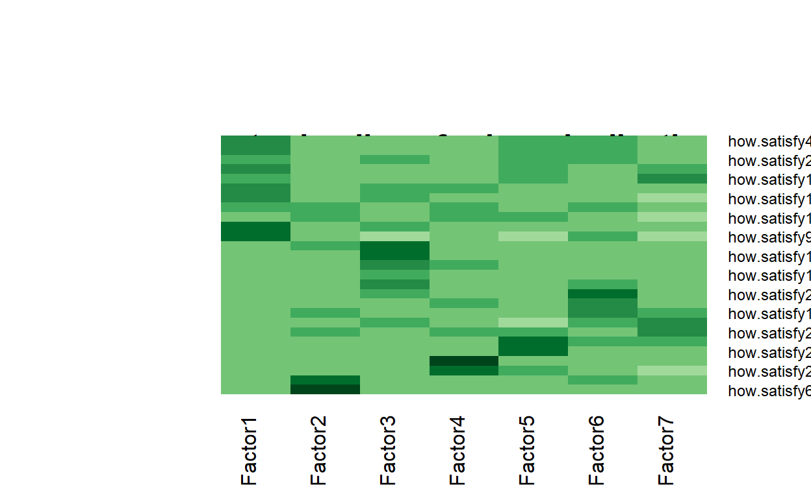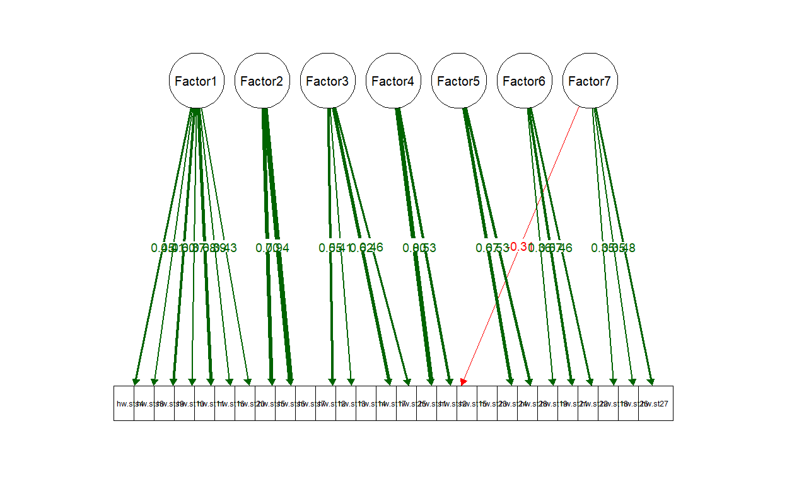
noc naf nparallel nkaiser
1 7 1 7 7[1] 7[1] 5.319735 1.978046 1.563414 1.411390 1.321812 1.214233 1.147458
Call:
factanal(x = toanalyze, factors = 7)
Uniquenesses:
how.satisfy1 how.satisfy2 how.satisfy4 how.satisfy5 how.satisfy6
0.339 0.576 0.608 0.400 0.123
how.satisfy8 how.satisfy9 how.satisfy10 how.satisfy11 how.satisfy12
0.729 0.606 0.719 0.422 0.612
how.satisfy13 how.satisfy14 how.satisfy15 how.satisfy16 how.satisfy17
0.786 0.849 0.848 0.710 0.556
how.satisfy18 how.satisfy19 how.satisfy20 how.satisfy21 how.satisfy22
0.770 0.634 0.621 0.552 0.727
how.satisfy23 how.satisfy24 how.satisfy25 how.satisfy26 how.satisfy27
0.794 0.515 0.754 0.710 0.564
how.satisfy28
0.627
Loadings:
Factor1 Factor2 Factor3 Factor4 Factor5 Factor6 Factor7
how.satisfy1 0.187 0.291 0.728
how.satisfy2 0.122 -0.140 0.594 0.124 0.115
how.satisfy4 0.515 0.163 0.114 0.172 0.237
how.satisfy5 0.236 0.173 0.664 0.170 0.121 0.153
how.satisfy6 0.209 0.163 0.871 0.181 0.112
how.satisfy8 0.450 0.148 0.150
how.satisfy9 0.589 0.118 0.105
how.satisfy10 0.427 0.201 -0.119 0.186
how.satisfy11 0.695 0.182 0.173 0.131
how.satisfy12 0.113 0.570 0.151 0.115
how.satisfy13 0.427 0.149
how.satisfy14 0.313 0.112 0.137
how.satisfy15 0.168 0.172 0.268 0.119
how.satisfy16 0.430 0.184 0.159 0.194
how.satisfy17 0.102 0.633 0.110
how.satisfy18 0.188 0.129 0.390 0.141
how.satisfy19 0.120 0.198 0.289 0.309 -0.101 0.345
how.satisfy20 0.449 0.124 0.161 0.325 0.174
how.satisfy21 0.203 0.233 0.583
how.satisfy22 0.129 0.142 0.469
how.satisfy23 0.244 0.170 0.228 0.249
how.satisfy24 0.219 0.137 0.638
how.satisfy25 0.105 0.436 0.161 0.125
how.satisfy26 0.304 0.364 0.238
how.satisfy27 0.208 0.578 0.128 0.176
how.satisfy28 0.116 0.223 0.202 0.510
Factor1 Factor2 Factor3 Factor4 Factor5 Factor6
SS loadings 2.289 1.675 1.517 1.202 1.164 1.010
Proportion Var 0.088 0.064 0.058 0.046 0.045 0.039
Cumulative Var 0.088 0.152 0.211 0.257 0.302 0.341
Factor7
SS loadings 0.990
Proportion Var 0.038
Cumulative Var 0.379
Test of the hypothesis that 7 factors are sufficient.
The chi square statistic is 198.57 on 164 degrees of freedom.
The p-value is 0.034
Call:
factanal(x = toanalyze, factors = 7, rotation = "oblimin")
Uniquenesses:
how.satisfy1 how.satisfy2 how.satisfy4 how.satisfy5 how.satisfy6
0.339 0.576 0.608 0.400 0.123
how.satisfy8 how.satisfy9 how.satisfy10 how.satisfy11 how.satisfy12
0.729 0.606 0.719 0.422 0.612
how.satisfy13 how.satisfy14 how.satisfy15 how.satisfy16 how.satisfy17
0.786 0.849 0.848 0.710 0.556
how.satisfy18 how.satisfy19 how.satisfy20 how.satisfy21 how.satisfy22
0.770 0.634 0.621 0.552 0.727
how.satisfy23 how.satisfy24 how.satisfy25 how.satisfy26 how.satisfy27
0.794 0.515 0.754 0.710 0.564
how.satisfy28
0.627
Loadings:
Factor1 Factor2 Factor3 Factor4 Factor5 Factor6 Factor7
how.satisfy1 0.791 0.104
how.satisfy2 0.534 0.118 -0.303
how.satisfy4 0.452 0.100 0.195 0.178
how.satisfy5 0.695 0.135
how.satisfy6 0.948
how.satisfy8 0.413 0.115 0.141
how.satisfy9 0.585 -0.183 -0.117 0.119 -0.121
how.satisfy10 0.365 0.167 0.105 -0.233
how.satisfy11 0.690 0.129
how.satisfy12 0.123 0.550
how.satisfy13 0.417 0.115
how.satisfy14 0.288
how.satisfy15 0.173 0.209 0.111 -0.129
how.satisfy16 0.397 0.142 0.186
how.satisfy17 0.625
how.satisfy18 0.177 0.120 0.333
how.satisfy19 0.251 -0.103 0.344 0.252
how.satisfy20 0.433 0.135 0.233
how.satisfy21 0.602
how.satisfy22 0.131 0.471
how.satisfy23 0.156 0.114 0.237 0.217
how.satisfy24 0.672
how.satisfy25 -0.104 0.462 0.140
how.satisfy26 0.255 -0.119 0.208 0.346
how.satisfy27 0.159 0.154 0.150 0.507
how.satisfy28 0.526 0.156 0.137
Factor1 Factor2 Factor3 Factor4 Factor5 Factor6
SS loadings 1.782 1.579 1.389 1.095 0.980 0.960
Proportion Var 0.069 0.061 0.053 0.042 0.038 0.037
Cumulative Var 0.069 0.129 0.183 0.225 0.262 0.299
Factor7
SS loadings 0.850
Proportion Var 0.033
Cumulative Var 0.332
Factor Correlations:
Factor1 Factor2 Factor3 Factor4 Factor5 Factor6 Factor7
Factor1 1.000 -0.3813 -0.281 -0.2512 -0.232 0.2339 0.214
Factor2 -0.381 1.0000 0.211 0.2834 0.318 -0.0568 -0.211
Factor3 -0.281 0.2111 1.000 0.1552 0.118 -0.1744 -0.351
Factor4 -0.251 0.2834 0.155 1.0000 0.247 -0.0146 -0.193
Factor5 -0.232 0.3178 0.118 0.2475 1.000 -0.1469 -0.206
Factor6 0.234 -0.0568 -0.174 -0.0146 -0.147 1.0000 0.126
Factor7 0.214 -0.2105 -0.351 -0.1928 -0.206 0.1255 1.000
Test of the hypothesis that 7 factors are sufficient.
The chi square statistic is 198.57 on 164 degrees of freedom.
The p-value is 0.034 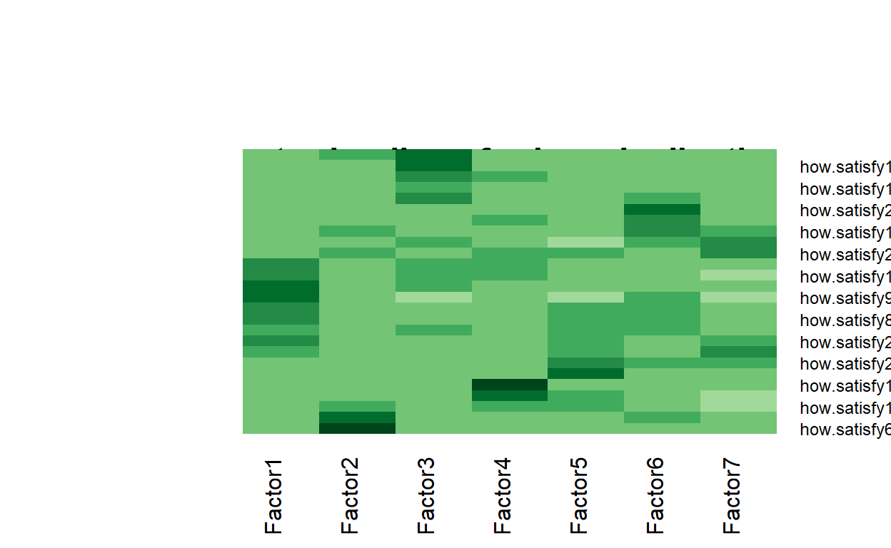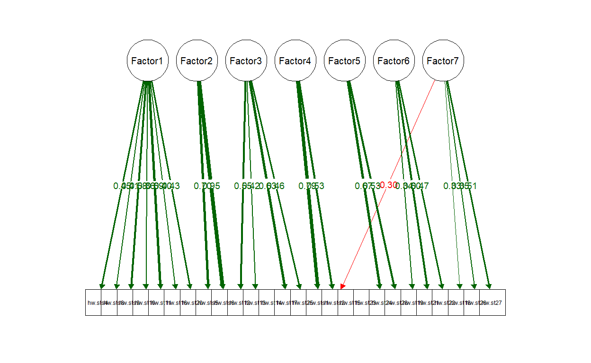
potential for being dropped
14,15,23
noc naf nparallel nkaiser
1 4 1 7 7[1] 7[1] 5.223057 1.956160 1.554894 1.408555 1.249867 1.211332 1.132269
Call:
factanal(x = toanalyze, factors = 7)
Uniquenesses:
how.satisfy1 how.satisfy2 how.satisfy4 how.satisfy5 how.satisfy6
0.334 0.574 0.589 0.446 0.005
how.satisfy8 how.satisfy9 how.satisfy10 how.satisfy11 how.satisfy12
0.731 0.654 0.710 0.416 0.652
how.satisfy13 how.satisfy14 how.satisfy16 how.satisfy17 how.satisfy18
0.788 0.847 0.711 0.535 0.763
how.satisfy19 how.satisfy20 how.satisfy21 how.satisfy22 how.satisfy23
0.517 0.617 0.664 0.774 0.774
how.satisfy24 how.satisfy25 how.satisfy26 how.satisfy27 how.satisfy28
0.629 0.718 0.752 0.544 0.501
Loadings:
Factor1 Factor2 Factor3 Factor4 Factor5 Factor6 Factor7
how.satisfy1 0.214 0.287 0.725
how.satisfy2 0.146 -0.157 0.113 0.588 0.118
how.satisfy4 0.531 0.139 0.103 0.240 0.202
how.satisfy5 0.256 0.158 0.616 0.164 0.200 0.100
how.satisfy6 0.217 0.157 0.942 0.161
how.satisfy8 0.460 0.171
how.satisfy9 0.560 0.121 0.101
how.satisfy10 0.437 0.190 -0.137 0.179
how.satisfy11 0.705 0.177 0.154 0.147
how.satisfy12 0.137 0.514 0.140 0.194
how.satisfy13 0.420 0.152
how.satisfy14 0.249 0.103 0.143 0.224
how.satisfy16 0.444 0.161 0.169 0.162
how.satisfy17 0.103 0.648 0.135
how.satisfy18 0.197 0.154 0.375 0.168
how.satisfy19 0.129 0.139 0.266 0.331 0.501 -0.119
how.satisfy20 0.454 0.132 0.160 0.306 0.198
how.satisfy21 0.182 0.261 0.468
how.satisfy22 0.161 0.386 0.173 0.138
how.satisfy23 0.258 0.116 0.324 0.199
how.satisfy24 0.249 0.535
how.satisfy25 0.103 0.480 0.154 0.110
how.satisfy26 0.336 0.311 0.195
how.satisfy27 0.199 0.584 0.197 0.166
how.satisfy28 0.129 0.169 0.198 0.638
Factor1 Factor2 Factor3 Factor4 Factor5 Factor6
SS loadings 2.349 1.614 1.522 1.130 1.127 1.048
Proportion Var 0.094 0.065 0.061 0.045 0.045 0.042
Cumulative Var 0.094 0.159 0.219 0.265 0.310 0.352
Factor7
SS loadings 0.964
Proportion Var 0.039
Cumulative Var 0.390
Test of the hypothesis that 7 factors are sufficient.
The chi square statistic is 161.18 on 146 degrees of freedom.
The p-value is 0.185
Call:
factanal(x = toanalyze, factors = 7, rotation = "oblimin")
Uniquenesses:
how.satisfy1 how.satisfy2 how.satisfy4 how.satisfy5 how.satisfy6
0.334 0.574 0.589 0.446 0.005
how.satisfy8 how.satisfy9 how.satisfy10 how.satisfy11 how.satisfy12
0.731 0.654 0.710 0.416 0.652
how.satisfy13 how.satisfy14 how.satisfy16 how.satisfy17 how.satisfy18
0.788 0.847 0.711 0.535 0.763
how.satisfy19 how.satisfy20 how.satisfy21 how.satisfy22 how.satisfy23
0.517 0.617 0.664 0.774 0.774
how.satisfy24 how.satisfy25 how.satisfy26 how.satisfy27 how.satisfy28
0.629 0.718 0.752 0.544 0.501
Loadings:
Factor1 Factor2 Factor3 Factor4 Factor5 Factor6 Factor7
how.satisfy1 0.802
how.satisfy2 0.536 0.101 -0.321
how.satisfy4 0.501 -0.119 0.148 0.216
how.satisfy5 0.607 0.168
how.satisfy6 1.011
how.satisfy8 0.444 0.145
how.satisfy9 0.551 -0.125 -0.112 -0.134
how.satisfy10 0.384 0.148 0.115 -0.242
how.satisfy11 0.714 0.108
how.satisfy12 0.106 0.490
how.satisfy13 0.416 -0.130
how.satisfy14 0.216 0.205
how.satisfy16 0.410 0.114 0.182
how.satisfy17 0.653
how.satisfy18 0.186 0.120 0.145 0.316
how.satisfy19 0.155 0.578 0.150
how.satisfy20 0.448 0.109 0.138 0.225
how.satisfy21 0.205 0.417 -0.129
how.satisfy22 -0.103 0.117 0.165 0.173 0.317 -0.121
how.satisfy23 0.201 0.201 0.250 -0.163
how.satisfy24 0.190 -0.122 0.540 -0.101
how.satisfy25 0.502 0.109 -0.139 0.112
how.satisfy26 0.330 0.200 0.226
how.satisfy27 0.115 0.178 0.167 0.249 0.445
how.satisfy28 0.697
Factor1 Factor2 Factor3 Factor4 Factor5 Factor6
SS loadings 1.938 1.501 1.424 1.089 0.998 0.965
Proportion Var 0.078 0.060 0.057 0.044 0.040 0.039
Cumulative Var 0.078 0.138 0.195 0.238 0.278 0.317
Factor7
SS loadings 0.714
Proportion Var 0.029
Cumulative Var 0.345
Factor Correlations:
Factor1 Factor2 Factor3 Factor4 Factor5 Factor6 Factor7
Factor1 1.000 0.3645 0.2343 -0.2418 -0.202 0.1730 -0.297
Factor2 0.364 1.0000 0.2112 -0.3090 -0.309 0.0179 -0.212
Factor3 0.234 0.2112 1.0000 -0.1723 -0.174 0.0535 -0.313
Factor4 -0.242 -0.3090 -0.1723 1.0000 0.256 0.0192 0.140
Factor5 -0.202 -0.3088 -0.1737 0.2558 1.000 -0.1061 0.286
Factor6 0.173 0.0179 0.0535 0.0192 -0.106 1.0000 -0.116
Factor7 -0.297 -0.2117 -0.3130 0.1403 0.286 -0.1156 1.000
Test of the hypothesis that 7 factors are sufficient.
The chi square statistic is 161.18 on 146 degrees of freedom.
The p-value is 0.185 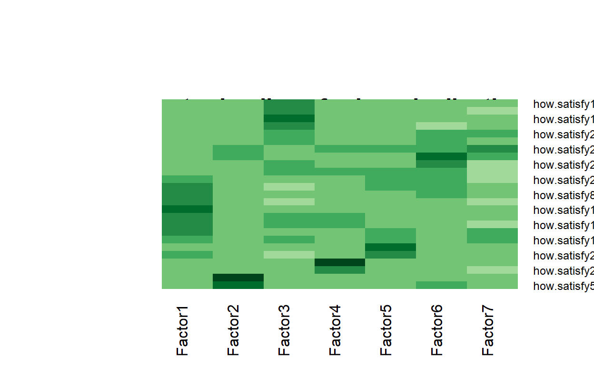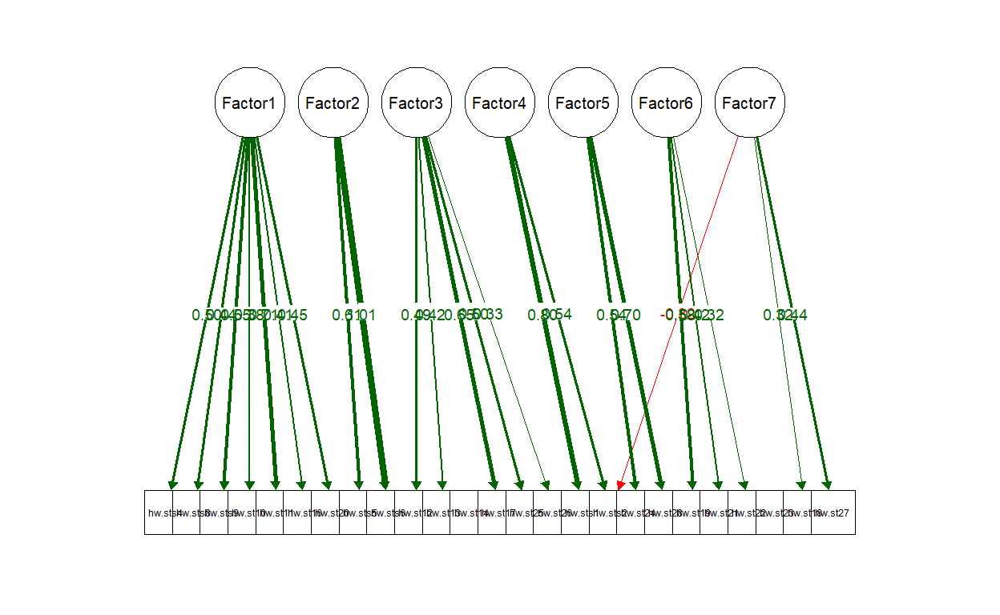
noc naf nparallel nkaiser
1 7 1 7 7[1] 7[1] 5.107321 1.916071 1.554868 1.400919 1.249288 1.190622 1.090269
Call:
factanal(x = toanalyze, factors = 7)
Uniquenesses:
how.satisfy1 how.satisfy2 how.satisfy4 how.satisfy5 how.satisfy6
0.331 0.573 0.596 0.446 0.005
how.satisfy8 how.satisfy9 how.satisfy10 how.satisfy11 how.satisfy12
0.732 0.635 0.708 0.415 0.661
how.satisfy13 how.satisfy16 how.satisfy17 how.satisfy18 how.satisfy19
0.794 0.712 0.537 0.767 0.599
how.satisfy20 how.satisfy21 how.satisfy22 how.satisfy23 how.satisfy24
0.620 0.579 0.741 0.795 0.568
how.satisfy25 how.satisfy26 how.satisfy27 how.satisfy28
0.725 0.736 0.555 0.566
Loadings:
Factor1 Factor2 Factor3 Factor4 Factor5 Factor6 Factor7
how.satisfy1 0.211 0.280 0.731
how.satisfy2 0.142 -0.160 0.122 0.584 0.131
how.satisfy4 0.530 0.143 0.118 0.201 0.217
how.satisfy5 0.257 0.619 0.149 0.180 0.182
how.satisfy6 0.213 0.942 0.153 0.168
how.satisfy8 0.458 0.157 0.120
how.satisfy9 0.571 0.126
how.satisfy10 0.439 0.195 -0.138 0.179
how.satisfy11 0.703 0.181 0.163 0.147
how.satisfy12 0.136 0.143 0.510 0.169
how.satisfy13 0.408 0.167
how.satisfy16 0.443 0.161 0.171 0.167
how.satisfy17 0.104 0.102 0.646 0.130
how.satisfy18 0.189 0.146 0.379 0.161
how.satisfy19 0.138 0.271 0.138 0.333 0.406 -0.116
how.satisfy20 0.447 0.161 0.130 0.316 0.189
how.satisfy21 0.197 0.241 0.558
how.satisfy22 0.142 0.444 0.156 0.114
how.satisfy23 0.260 0.116 0.273 0.221
how.satisfy24 0.234 0.104 0.597
how.satisfy25 0.474 0.157 0.115
how.satisfy26 0.316 0.335 0.222
how.satisfy27 0.199 0.587 0.153 0.172
how.satisfy28 0.118 0.191 0.205 0.577
Factor1 Factor2 Factor3 Factor4 Factor5 Factor6
SS loadings 2.337 1.524 1.495 1.167 1.064 1.044
Proportion Var 0.097 0.064 0.062 0.049 0.044 0.043
Cumulative Var 0.097 0.161 0.223 0.272 0.316 0.360
Factor7
SS loadings 0.973
Proportion Var 0.041
Cumulative Var 0.400
Test of the hypothesis that 7 factors are sufficient.
The chi square statistic is 137.92 on 129 degrees of freedom.
The p-value is 0.279
Call:
factanal(x = toanalyze, factors = 7, rotation = "oblimin")
Uniquenesses:
how.satisfy1 how.satisfy2 how.satisfy4 how.satisfy5 how.satisfy6
0.331 0.573 0.596 0.446 0.005
how.satisfy8 how.satisfy9 how.satisfy10 how.satisfy11 how.satisfy12
0.732 0.635 0.708 0.415 0.661
how.satisfy13 how.satisfy16 how.satisfy17 how.satisfy18 how.satisfy19
0.794 0.712 0.537 0.767 0.599
how.satisfy20 how.satisfy21 how.satisfy22 how.satisfy23 how.satisfy24
0.620 0.579 0.741 0.795 0.568
how.satisfy25 how.satisfy26 how.satisfy27 how.satisfy28
0.725 0.736 0.555 0.566
Loadings:
Factor1 Factor2 Factor3 Factor4 Factor5 Factor6 Factor7
how.satisfy1 0.800
how.satisfy2 0.527 0.120 -0.323
how.satisfy4 0.487 -0.119 0.164 0.196
how.satisfy5 0.622 0.163
how.satisfy6 1.012
how.satisfy8 0.432 0.144
how.satisfy9 0.562 -0.155 -0.119 -0.128
how.satisfy10 0.377 0.147 0.110 -0.254
how.satisfy11 0.704 0.126
how.satisfy12 0.115 0.481 0.102
how.satisfy13 0.394 0.118 -0.115
how.satisfy16 0.413 0.117 0.181
how.satisfy17 0.643
how.satisfy18 0.173 0.130 0.139 0.310
how.satisfy19 0.204 0.412 0.282
how.satisfy20 0.434 0.101 0.138 0.219
how.satisfy21 0.143 0.557
how.satisfy22 -0.107 0.142 0.120 0.423
how.satisfy23 0.190 0.212 0.248
how.satisfy24 0.136 0.617
how.satisfy25 0.504 0.119 -0.107
how.satisfy26 0.302 0.183 0.294
how.satisfy27 0.130 0.167 0.152 0.514
how.satisfy28 0.616
Factor1 Factor2 Factor3 Factor4 Factor5 Factor6
SS loadings 1.873 1.535 1.301 1.062 0.967 0.940
Proportion Var 0.078 0.064 0.054 0.044 0.040 0.039
Cumulative Var 0.078 0.142 0.196 0.240 0.281 0.320
Factor7
SS loadings 0.809
Proportion Var 0.034
Cumulative Var 0.354
Factor Correlations:
Factor1 Factor2 Factor3 Factor4 Factor5 Factor6 Factor7
Factor1 1.000 0.3680 0.239 -0.23605 -0.210 0.23127 -0.218
Factor2 0.368 1.0000 0.205 -0.29062 -0.321 0.06618 -0.210
Factor3 0.239 0.2051 1.000 -0.15578 -0.136 0.14228 -0.328
Factor4 -0.236 -0.2906 -0.156 1.00000 0.254 -0.00753 0.175
Factor5 -0.210 -0.3211 -0.136 0.25397 1.000 -0.16407 0.238
Factor6 0.231 0.0662 0.142 -0.00753 -0.164 1.00000 -0.116
Factor7 -0.218 -0.2100 -0.328 0.17509 0.238 -0.11617 1.000
Test of the hypothesis that 7 factors are sufficient.
The chi square statistic is 137.92 on 129 degrees of freedom.
The p-value is 0.279 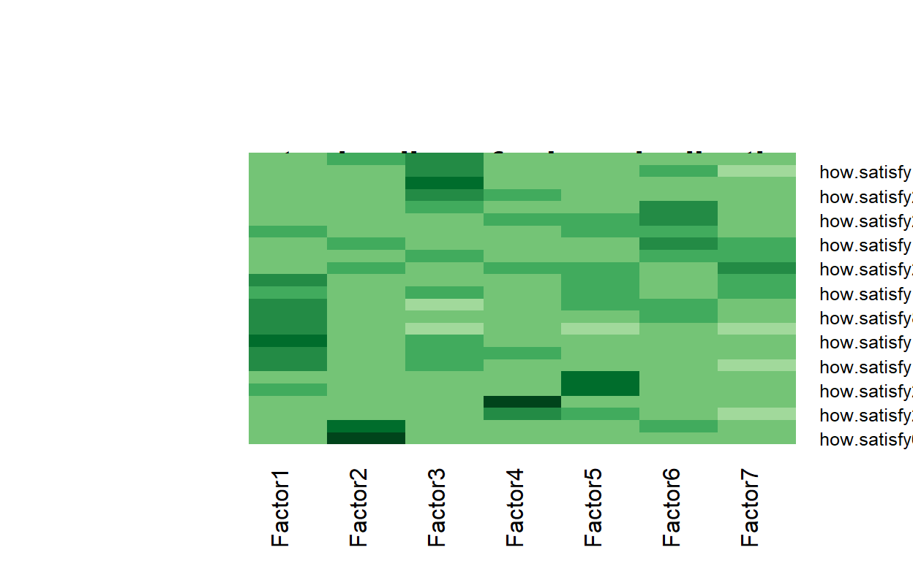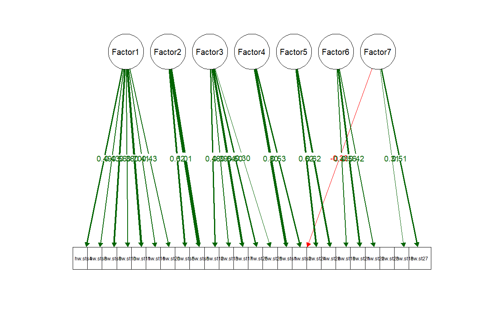
#fifth iteration potential for being dropped 23
noc naf nparallel nkaiser
1 7 1 7 7[1] 7[1] 4.968644 1.914441 1.546216 1.385934 1.234255 1.146575 1.072335
Call:
factanal(x = toanalyze, factors = 7)
Uniquenesses:
how.satisfy1 how.satisfy2 how.satisfy4 how.satisfy5 how.satisfy6
0.373 0.582 0.619 0.378 0.158
how.satisfy8 how.satisfy9 how.satisfy10 how.satisfy11 how.satisfy12
0.735 0.625 0.711 0.410 0.652
how.satisfy13 how.satisfy16 how.satisfy17 how.satisfy18 how.satisfy19
0.798 0.711 0.537 0.779 0.639
how.satisfy20 how.satisfy21 how.satisfy22 how.satisfy24 how.satisfy25
0.626 0.459 0.739 0.493 0.732
how.satisfy26 how.satisfy27 how.satisfy28
0.728 0.526 0.613
Loadings:
Factor1 Factor2 Factor3 Factor4 Factor5 Factor6 Factor7
how.satisfy1 0.215 0.257 0.707
how.satisfy2 0.129 -0.135 0.593 0.105 0.110
how.satisfy4 0.521 0.164 0.112 0.156 0.212
how.satisfy5 0.248 0.148 0.687 0.159 0.100 0.150
how.satisfy6 0.225 0.148 0.852 0.177
how.satisfy8 0.454 0.145 0.133
how.satisfy9 0.579 0.109
how.satisfy10 0.428 0.199 -0.145 0.187
how.satisfy11 0.709 0.186 0.141 0.135
how.satisfy12 0.124 0.524 0.171 0.127
how.satisfy13 0.408 0.165
how.satisfy16 0.444 0.164 0.161 0.175
how.satisfy17 0.649 0.115
how.satisfy18 0.201 0.139 0.358 0.164
how.satisfy19 0.135 0.161 0.290 0.341 -0.108 0.323
how.satisfy20 0.457 0.128 0.155 0.303 0.178
how.satisfy21 0.208 0.235 0.656
how.satisfy22 0.144 0.152 0.443 0.112
how.satisfy24 0.233 0.106 0.660
how.satisfy25 0.109 0.465 0.146 0.117
how.satisfy26 0.313 0.354 0.212
how.satisfy27 0.206 0.620 0.168
how.satisfy28 0.121 0.203 0.194 0.532
Factor1 Factor2 Factor3 Factor4 Factor5 Factor6
SS loadings 2.283 1.496 1.487 1.167 1.025 0.971
Proportion Var 0.099 0.065 0.065 0.051 0.045 0.042
Cumulative Var 0.099 0.164 0.229 0.280 0.324 0.367
Factor7
SS loadings 0.944
Proportion Var 0.041
Cumulative Var 0.408
Test of the hypothesis that 7 factors are sufficient.
The chi square statistic is 114.72 on 113 degrees of freedom.
The p-value is 0.437
Call:
factanal(x = toanalyze, factors = 7, rotation = "oblimin")
Uniquenesses:
how.satisfy1 how.satisfy2 how.satisfy4 how.satisfy5 how.satisfy6
0.373 0.582 0.619 0.378 0.158
how.satisfy8 how.satisfy9 how.satisfy10 how.satisfy11 how.satisfy12
0.735 0.625 0.711 0.410 0.652
how.satisfy13 how.satisfy16 how.satisfy17 how.satisfy18 how.satisfy19
0.798 0.711 0.537 0.779 0.639
how.satisfy20 how.satisfy21 how.satisfy22 how.satisfy24 how.satisfy25
0.626 0.459 0.739 0.493 0.732
how.satisfy26 how.satisfy27 how.satisfy28
0.728 0.526 0.613
Loadings:
Factor1 Factor2 Factor3 Factor4 Factor5 Factor6 Factor7
how.satisfy1 0.755 0.135
how.satisfy2 0.573 0.104 -0.250
how.satisfy4 0.456 0.104 -0.106 0.169 0.168
how.satisfy5 0.721 0.132
how.satisfy6 0.925
how.satisfy8 0.416 0.150
how.satisfy9 0.567 -0.178 0.114 -0.107 -0.118
how.satisfy10 0.355 0.147 0.135 -0.252
how.satisfy11 0.704 0.128
how.satisfy12 0.144 0.489
how.satisfy13 0.383 0.144
how.satisfy16 0.415 0.115 0.174
how.satisfy17 0.639
how.satisfy18 0.180 0.115 0.127 0.305
how.satisfy19 0.243 -0.115 0.324 0.283
how.satisfy20 0.440 0.126 0.219
how.satisfy21 0.692
how.satisfy22 -0.107 0.141 0.443
how.satisfy24 0.687
how.satisfy25 -0.112 0.488 0.117
how.satisfy26 0.278 0.185 0.324
how.satisfy27 0.133 0.128 0.107 0.575
how.satisfy28 0.142 0.545 0.125
Factor1 Factor2 Factor3 Factor4 Factor5 Factor6
SS loadings 1.776 1.532 1.243 1.029 0.974 0.913
Proportion Var 0.077 0.067 0.054 0.045 0.042 0.040
Cumulative Var 0.077 0.144 0.198 0.243 0.285 0.325
Factor7
SS loadings 0.856
Proportion Var 0.037
Cumulative Var 0.362
Factor Correlations:
Factor1 Factor2 Factor3 Factor4 Factor5 Factor6 Factor7
Factor1 1.000 -0.3980 0.2634 -0.2370 -0.2224 0.230 -0.2801
Factor2 -0.398 1.0000 -0.1978 0.2851 0.3206 -0.224 0.0898
Factor3 0.263 -0.1978 1.0000 -0.1338 -0.0937 0.348 -0.1766
Factor4 -0.237 0.2851 -0.1338 1.0000 0.2384 -0.191 0.0448
Factor5 -0.222 0.3206 -0.0937 0.2384 1.0000 -0.192 0.1883
Factor6 0.230 -0.2243 0.3479 -0.1914 -0.1923 1.000 -0.1477
Factor7 -0.280 0.0898 -0.1766 0.0448 0.1883 -0.148 1.0000
Test of the hypothesis that 7 factors are sufficient.
The chi square statistic is 114.72 on 113 degrees of freedom.
The p-value is 0.437 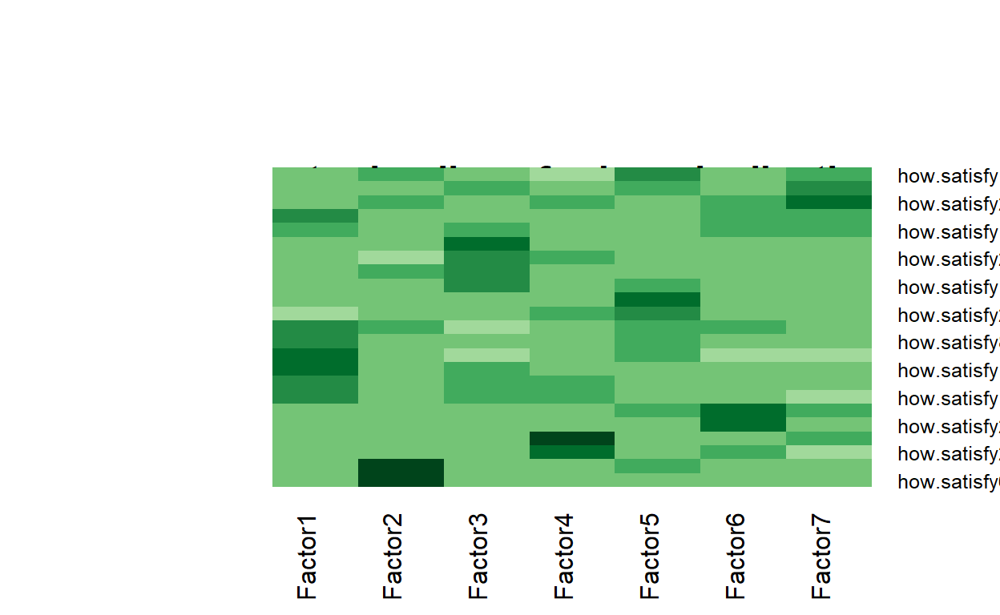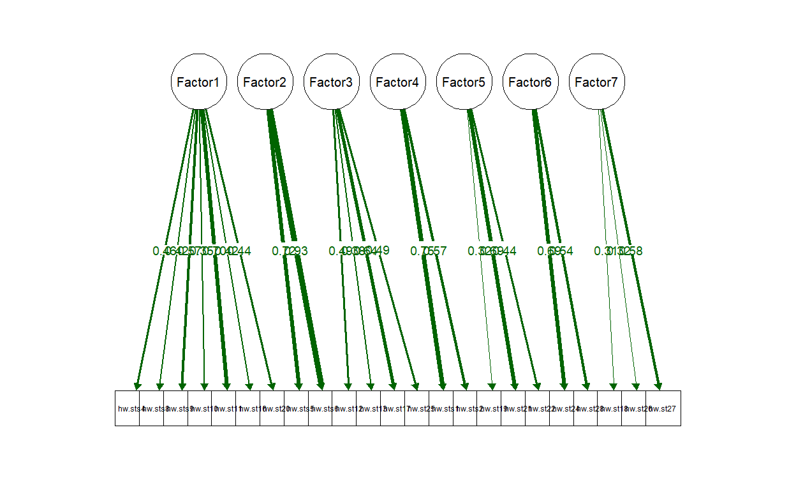
noc naf nparallel nkaiser
1 4 1 4 4[1] 4[1] 4.129512 1.340711 1.224695 1.057526
Call:
factanal(x = filtereddata, factors = 3)
Uniquenesses:
how.satisfy11 how.satisfy5 how.satisfy6 how.satisfy3 how.satisfy4
0.489 0.399 0.115 0.471 0.631
how.satisfy20 how.satisfy12 how.satisfy1 how.satisfy19 how.satisfy21
0.698 0.762 0.828 0.672 0.635
how.satisfy27 how.satisfy17 how.satisfy28 how.satisfy10
0.831 0.795 0.857 0.867
Loadings:
Factor1 Factor2 Factor3
how.satisfy11 0.685 0.108 0.173
how.satisfy5 0.309 0.637 0.316
how.satisfy6 0.252 0.890 0.168
how.satisfy3 0.658 0.308
how.satisfy4 0.558 0.107 0.217
how.satisfy20 0.488 0.190 0.169
how.satisfy12 0.193 0.155 0.421
how.satisfy1 0.374 0.151
how.satisfy19 0.118 0.255 0.499
how.satisfy21 0.130 0.590
how.satisfy27 0.180 0.257 0.267
how.satisfy17 0.113 0.137 0.417
how.satisfy28 0.283 0.245
how.satisfy10 0.303 0.195
Factor1 Factor2 Factor3
SS loadings 2.035 1.555 1.361
Proportion Var 0.145 0.111 0.097
Cumulative Var 0.145 0.256 0.354
Test of the hypothesis that 3 factors are sufficient.
The chi square statistic is 114.1 on 52 degrees of freedom.
The p-value is 1.51e-06
Call:
factanal(x = filtereddata, factors = 3, rotation = "oblimin")
Uniquenesses:
how.satisfy11 how.satisfy5 how.satisfy6 how.satisfy3 how.satisfy4
0.489 0.399 0.115 0.471 0.631
how.satisfy20 how.satisfy12 how.satisfy1 how.satisfy19 how.satisfy21
0.698 0.762 0.828 0.672 0.635
how.satisfy27 how.satisfy17 how.satisfy28 how.satisfy10
0.831 0.795 0.857 0.867
Loadings:
Factor1 Factor2 Factor3
how.satisfy11 0.736
how.satisfy5 0.108 0.639 0.166
how.satisfy6 0.952
how.satisfy3 0.672 0.165 -0.145
how.satisfy4 0.579 0.114
how.satisfy20 0.481
how.satisfy12 0.112 0.385
how.satisfy1 0.373
how.satisfy19 0.248 0.462
how.satisfy21 0.604
how.satisfy27 0.238 0.205
how.satisfy17 0.114 0.398
how.satisfy28 0.270 0.202
how.satisfy10 0.299 0.144
Factor1 Factor2 Factor3
SS loadings 1.892 1.507 1.058
Proportion Var 0.135 0.108 0.076
Cumulative Var 0.135 0.243 0.318
Factor Correlations:
Factor1 Factor2 Factor3
Factor1 1.000 -0.530 0.313
Factor2 -0.530 1.000 -0.377
Factor3 0.313 -0.377 1.000
Test of the hypothesis that 3 factors are sufficient.
The chi square statistic is 114.1 on 52 degrees of freedom.
The p-value is 1.51e-06 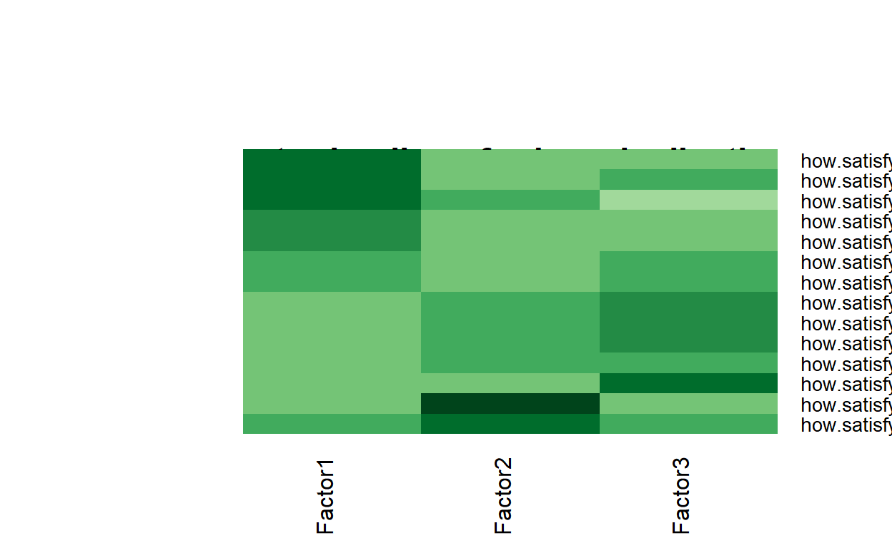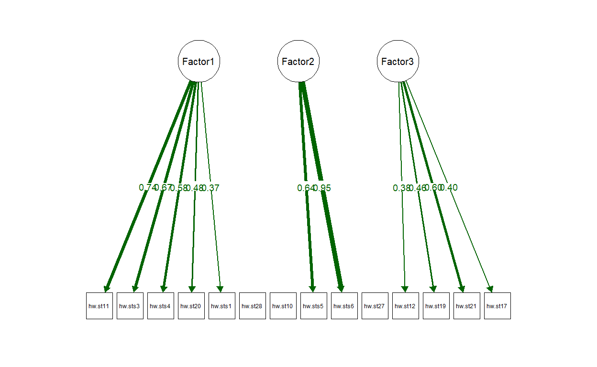